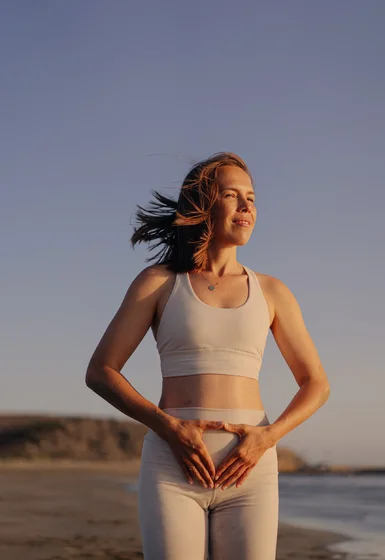

Йога в Ларнаке
На берегу моря в тени в Ларнаке. Практика сочетает физические упражнения и дыхательные техники для общего оздоровления и укрепления тела.
Стоимость — 20 евро Записаться ↗
На берегу моря в тени в Ларнаке. Практика сочетает физические упражнения и дыхательные техники для общего оздоровления и укрепления тела.
Стоимость — 20 евро Записаться ↗

Мягкие практики для укрепления здоровья и улучшения самочувствия во время беременности. Работа со всеми основными недомоганиями.
Стоимость — 2500 ₽ Записаться ↗Курс «Тазовое дно» — мягкое, глубокое путешествие к себе через осознанное движение, дыхание и внимание к телу.
Мы бережно активируем мышцы тазового дна, улучшаем кровообращение, осанку, чувствительность и контакт с телом.
Формат: онлайн, 10 коротких практик по 30 минут
Результат: лёгкость в теле, женское здоровье
Записаться ↗Курс поможет избавиться от напряжения, укрепить мышцы спины и живота, улучшить осанку и вернуть телу ощущение поддержки изнутри.
Мягкие, продуманные практики подойдут тем, у кого часто болит спина от сидячей работы, стресса или усталости.
Формат: онлайн, 12 коротких практик по 30 минут
Результат: сильная спина, открытая грудная клетка, лёгкость и уверенность в теле
Записаться ↗Я помогу выбрать формат и оформить сертификат.
Узнать о сертификате ↗